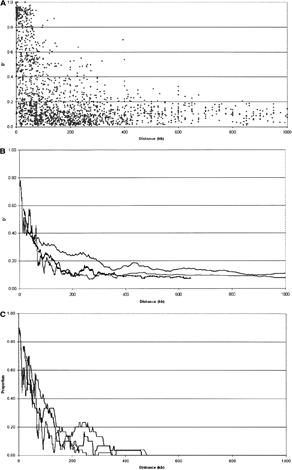

3-3-2-3-5 参考 連鎖不均衡(LD)の実際及び間接関連検出用のSNPマーカーと真のローカスとの関係について
以下のグラフはヒトゲノム上のある領域における連鎖不平衡の広がりを実際のgenotype dataからhaplotype頻度をEM-algorithmで推定してプロットしたものである。
このグラフが示していることは以下のようにまとめられる。
(1) 平均してみるとLDの強さ(ここではLDの指標としてD’を使用している)は距離に応じて指数関数的に減少していく
(2) 個々のローカス間のLDはばらつきが大きく非常に近くてもLDをほとんど認めない場合もあれば相当程度遠くてもある程度のLDを維持している場合もある
(3) SNPをマーカーとして利用し、間接関連を検出して、その近傍の真の関連ローカスに到達しようとする場合、真のローカスとマーカーローカスとの間にはある程度のLDがなければ現実的な検体数で関連を認めることは難しい。複合遺伝性疾患の関連遺伝子を同定するような場合でそもそも真のローカスとの直接関連を見出すのに必要な検体数が大きい場合には、LDとして(D’)2に換算して(D’)2＞0.33程度が必要であるとされている。
(4) ある真のローカスから前後50kbの範囲にあるSNPのうち約半数は(D’)2＞0.33の条件を満たし、前後100kbの範囲にあるSNPのうち約4割は(D’)2＞0.33の条件を満たしていた。
(5) このことから真のローカスから50kb程度の距離にあるSNP３つを用いれば、そのうちの少なくとも1つが真のローカスと(D’)2＞0.33の条件を満たす確率は
1-(0.5)３＝0.875 であり、
100kb程度の距離にあるSNP3つを用いれば、そのうちの少なくとも1つが真のローカスと
(D’)２＞0.33の条件を満たす確率は
1-(0.6)３＝0.784 である。
ヒトゲノム上の3領域、127マーカーのデータから2108マーカーペアのLDを求めた結果
−GR Abecasis e al，Am J Hum Genet
68：191-197，(2001)
D’

A：2点間のD’と距離との関係
0
D’ (平均)
B：Aの図はばらつきがあってやや解りにくいので30ペアごとのD’と距離との関係の平均をとることで集約させた図
0 距離 １ (D’)2<0.33 の割合 1
C：LDの存在に依存したassociation
studyでは、associationが(D’)２に比例して減衰するので(D’)２>0.33が解析に有効なLDの広がりとみなし、(D’)２>0.33となるマーカーペアの割合が距離によってどのように減少するかを示した図
カウンタ